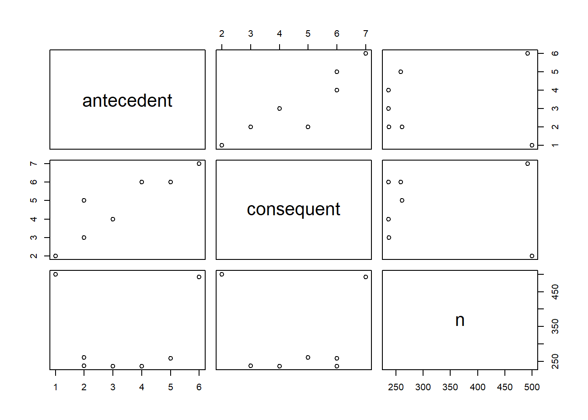

A handover-of-work network can be created with the resource_map function. It has the same arguments as the process_map function.
patients %>%
resource_map()A more compact representation of hand-over-of-work is given by the resource_matrix function, which works the same as the precedence matrix functions.
patients %>%
resource_matrix() %>%
plot()